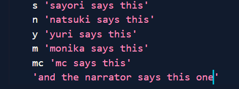
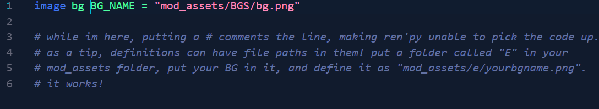

So, let's cut right to the chase; you're probably here to learn how to mod DDLC. It's probably overwhelming at first, and I can't blame you. There's a lot of things to learn, like posing, coding...
However, to do these things, the first thing you have to know is how to get a mod running.
That's what this is here for.
Setting up the mod template is pretty hard the first time, honestly, so we should probably get that done first.
While reading this, keep in mind that the writers assumption is that you aren't looking to make any custom UI or anything very complicated. This is about setting up and packaging your first project, some general Ren'Py tips, and commonly used mod tools to add; nothing else.
You should also familiarize yourself with Team Salvatos IP guidelines.
First things first, go to the DDLC Mod Template github page. The latest version as of this page is 4.2.2, so we'll go with that.
Next to choose between Ren'Py versions; Ren'Py 8 is for more technical stuff, and Ren'Py 6 is really horribly outdated, so you should click on and download DDLCModTemplate-4.2.2.zip.
After this, install a base copy of DDLC from ddlc.moe (the steam version is incompatible for modding), and the DDMmaker for Ren'py 7. The DDMmaker assists you opening your project. Finally, install Ren'Py. You can put Ren'Py anywhere but your mod folder.
Make a folder called "Mods" wherever you want on your PC. Make a folder inside the mods folder. You can call these folders whatever, but I'll call the folder inside the mods folder 'example project'. Then, put your base copy of DDLC into your example project folder. Grab the DDLC mod template zip, and copy the contents into the example project folder. When it says to overwrite, say yes.
Next, put your DDMmaker copy into a separate folder. Then, load it up. It has no projects on it so far, and that's perfectly normal. Open renpy.exe, click settings, and click projects directory. Then, select the Mods folder. After this, your mod project should show up.
CONGRATULATIONS! If you've followed all of these steps, your mod should be ready to be started. If the example project has a mod_assets folder in the game folder, you have done everything correct.
First thing, drag the game folder of your mod into the text editor of your choice. I recommend Visual Studio Code.
The mods template organization can be overwhelming at first. I'll put a explanation of folders and .rpy files down below.
I'll give you an in-depth breakdown on how to use anything I assume a new user would want to know later on.
...But first, go to definitions.rpy and set config_developer to true. It lets you reload your script in game using SHIFT + R and lets you rollback text.
console.rpy - controls the in-game console. not necessary for a first creation unless you want to get very meta...
glitchtext.rpy - controls the glitchtext in the game.
poems-special.rpy - controls the special poems not given out. will not be explained because i do not understand it.chrs
contains all .chr files. not necessary to edit.core
nothing should be edited except for credits.rpy, if you want a base DDLC credits experience. for a new modder, the basic end screen is what we'll be going with, however.definitions
cgs.rpy - contains base game cg definitions
definitions.rpy - contains all base game girl definitions. if you want to define anything new, I recommend making a new definitions file, as this one is large and hard to navigate.
effects.rpy and transform.rpy - DO NOT EDIT THIS. contains base game effects, and may be harmed if you dont know what you're doing while editing.
splash.rpy - contains splash screen, mod warning screen, etc. not necessary to edit.mod_assets
this is where new assets should be put.poem_(x) is for poems. i'll teach you how to edit those later.
gui.rpy - defines UI. should probably not be edited until you get the general hang of ren'py.
options.rpy - defines a few important things we'll get onto later, but can be edited.
screens.rpy - DO NOT EDIT. this is very complicated for a newcomer, and i'd recommend keeping it to the base game for your new project. this defines the settings, main menu, etc.
script.rpy - probably the most important folder. we will edit this.
Now, to start a mod. First, open script.rpy. Remove lines 25 to 18 to prevent any conflicts. Then, remove line 46. After this, put in a call statement. I'll call it example, so put in 'call example'. Next, make a new .rpy file. It can be called whatever you want, but again, I'll call it example.rpy. In example.rpy, write this down:

(if it makes it easier to follow, the theme in visual studio code i use is the sayori dark theme from the doki theme.)
Next, start your project using DDMmaker (by clicking on the 'example project' text) and press new game. If Sayori says 'hello world', you've done it right.
First things first, making the characters talk. Each character has a separate key letter defined in the script. For example, if you put s in front of a line of text in quotes like as in the example, she'll say that quote. Yuri is y, Natsuki is n, and Monika is m. The MC is just 'mc', and the narrator talks by putting a quote without any key letter.
To define a custom character, either go into definitions.rpy or make a new file, and put in "define ny = Character('Nat & Yuri', what_prefix='"', what_suffix='"', ctc="ctc", ctc_position="fixed")". Change 'ny' to whatever key letter you want, and 'Nat and Yuri' to whatever character you want. If done right, typing that new key letter will have that new character speaking.
To show backgrounds, put in "scene bg (BG_NAME)."
To make this look nice, you need to add a transition. I recommend wipeleft_scene, so put "scene bg (BG_NAME) with wipeleft_scene". That shows the new BG, wiping all of the characters from the previous scene away. To keep characters, just say 'show bg (BG_name)'.
To define a background, do this:

With this method, the bg name to call is "BG_NAME".
To define a normal image, remove 'bg' from the define statement. Normal images can be shown by saying 'show (IMAGENAME)'. Audio can be called by saying 'play music (MUSICNAME)' and stopped by 'stop music (MUSICNAME)'. Adding fadeins also works, etc. 'play music (MUSICNAME) fadein 2.0' and 'stop music (MUSICNAME) fadeout 2.0'.
Characters can be placed by using 't11', ex. 'show monika at t11'. while t11 is the basic one that displays the image in the middle, there are others that display it in a different position.
Audio is defined in a slightly different way; put your audio definition in as:
define audio.MUSICNAME = "mod_assets/filename.ogg"
Normal .mp3 files also work. To define a non-looping sound, replace 'play audio MUSICNAME' with 'play sound MUSICNAME'.
Thats how to show backgrounds and other images, but...how about characters?
To put it lightly, how base DDLC displays its characters is not very intuitive or expressive. Thats how MPT, the community posing tool, was made. Please remember to credit Chronos, Yagamirai10, and Terra for making MPT.
Install the files and put the "MPT" folder into your mod_assets folder. MPT is then installed.
MPT is complicated, so I recommend you to read the official documentation.
For a quick summary, each character can be displayed as such:
If you want to define a new character thats in MPT, you'll have to use dynamic character. Basically see this string of code:
define e = DynamicCharacter('e_name', image='eileen', what_prefix='"', what_suffix='"', ctc="ctc", ctc_position="fixed")
Now, change "e" to the key letter, "e_name" to an external character name, and "eileen" to what your characters image is called.
Now, you should know how to show or play pretty much every displayable in Ren'py, in an efficient matter.
To hide an image, just put
show IMAGENAME at thide
hide IMAGENAME
This next script shows all of these things I've taught you in action.
This segment will cover variables, choices, poems, using the console, glitchtext, and text tags.
I'll be using examples in code, as those are easier to annotate than an HTML document. Hover over an image to zoom into it.
Congratulations! Your mod is near finishing. First thing, you should go into definitions.rpy and set developer mode to false. Then, go to options.rpy.
Set config.name to your mods name, set the config.version to 1.0.0, set the build_name to whatever, and set the save_directory to whatever, also. The window icon is an optional change, but its ideal to change that to your mod logo or something.
Next, go into DDMmaker, and click 'build mod'. Select the Ren'Py 7 build template, and press build. When built, it should be in a .zip. From there, its on you to upload it to a site and release your mod. I recommend mediafire.
I'll put tools and resources I recommend here.
REMEMBER TO FOLLOW THE CREATORS, TEAM SALVATOS, AND DDMCS GUIDELINES WHILE USING THESE!